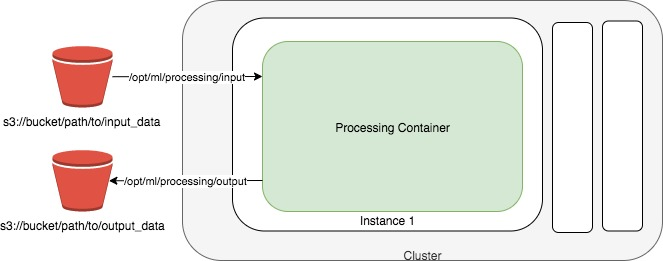

Amazon SageMaker Processing¶
Amazon SageMaker Processing allows you to run steps for data pre- or post-processing, feature engineering, data validation, or model evaluation workloads on Amazon SageMaker.
Contents
Background¶
Amazon SageMaker lets developers and data scientists train and deploy machine learning models. With Amazon SageMaker Processing, you can run processing jobs for data processing steps in your machine learning pipeline. Processing jobs accept data from Amazon S3 as input and store data into Amazon S3 as output.
Setup¶
The fastest way to get started with Amazon SageMaker Processing is by running a Jupyter notebook. You can follow the Getting Started with Amazon SageMaker guide to start running notebooks on Amazon SageMaker.
You can run notebooks on Amazon SageMaker that demonstrate end-to-end examples of using processing jobs to perform data pre-processing, feature engineering and model evaluation steps. See Learn More at the bottom of this page for more in-depth information.
Data Pre-Processing and Model Evaluation with scikit-learn¶
You can run a scikit-learn script to do data processing on SageMaker using the sagemaker.sklearn.processing.SKLearnProcessor class.
You first create a SKLearnProcessor
from sagemaker.sklearn.processing import SKLearnProcessor
sklearn_processor = SKLearnProcessor(
framework_version="0.20.0",
role="[Your SageMaker-compatible IAM role]",
instance_type="ml.m5.xlarge",
instance_count=1,
)
Then you can run a scikit-learn script preprocessing.py in a processing job. In this example, our script takes one input from S3 and one command-line argument, processes the data, then splits the data into two datasets for output. When the job is finished, we can retrive the output from S3.
from sagemaker.processing import ProcessingInput, ProcessingOutput
sklearn_processor.run(
code="preprocessing.py",
inputs=[
ProcessingInput(source="s3://your-bucket/path/to/your/data", destination="/opt/ml/processing/input"),
],
outputs=[
ProcessingOutput(output_name="train_data", source="/opt/ml/processing/train"),
ProcessingOutput(output_name="test_data", source="/opt/ml/processing/test"),
],
arguments=["--train-test-split-ratio", "0.2"],
)
preprocessing_job_description = sklearn_processor.jobs[-1].describe()
For an in-depth look, please see the Scikit-learn Data Processing and Model Evaluation example notebook.
Data Processing with Spark¶
SageMaker provides two classes for customers to run Spark applications: sagemaker.spark.processing.PySparkProcessor and sagemaker.spark.processing.SparkJarProcessor
PySparkProcessor¶
You can use the sagemaker.spark.processing.PySparkProcessor class to run PySpark scripts as processing jobs.
This example shows how you can take an existing PySpark script and run a processing job with the sagemaker.spark.processing.PySparkProcessor class and the pre-built SageMaker Spark container.
First you need to create a PySparkProcessor object
from sagemaker.processing import PySparkProcessor, ProcessingInput
spark_processor = PySparkProcessor(
base_job_name="sm-spark",
framework_version="2.4",
py_version="py37",
container_version="1",
role="[Your SageMaker-compatible IAM role]",
instance_count=2,
instance_type="ml.c5.xlarge",
max_runtime_in_seconds=1200,
image_uri="your-image-uri"
)
The framework_version is the spark version where the script will be running.
py_version and container_version are two new parameters you can specify in the constructor. They give you more flexibility to select the container version to avoid any backward incompatibilities and unnecessary dependency upgrade.
If you just specify the framework_version, Sagemaker will default to a python version and the latest container version. To pin to an exact version of the SageMaker Spark container you need to specify all the three parameters: framework_version, py_version and container_version.
You can also specify the image_uri and it will override all the three parameters.
Note that command option will not be supported on either PySparkProcessor or SparkJarProcessor. If you want to run the script on your own container, please use ScriptProcessor instead.
Then you can run your existing spark script preprocessing.py in a processing job.
spark_processor.run(
submit_app="preprocess.py",
submit_py_files=["module.py", "lib.egg"],
submit_jars=["lib.jar", "lib2.jar"],
submit_files=["file.txt", "file2.csv"],
arguments=["s3_input_bucket", bucket,
"s3_input_key_prefix", input_prefix,
"s3_output_bucket", bucket,
"s3_output_key_prefix", input_preprocessed_prefix],
spark_event_logs_s3_uri="s3://your-bucket/your-prefix/store-spark-events"
)
submit_app is the local relative path or s3 path of your python script, it’s preprocess.py in this case.
You can also specify any python or jar dependencies or files that your script depends on with submit_py_files, submit_jars and submit_files.
submit_py_files is a list of .zip, .egg, or .py files to place on the PYTHONPATH for Python apps. submit_jars is a list of jars to include on the driver and executor classpaths. submit_files is list of files to be placed in the working directory of each executor. File paths of these files in executors can be accessed via SparkFiles.get(fileName).
Each item in the list can be either s3 path or local path, and if you have dependencies stored both in s3 and locally, you can put all of them in submit_py_files, submit_jars, and submit_files
Just like using the ScriptProcessor, you can pass any arguments to your script by specifying arguments parameter. In this example, four arguments are passed to the script to get and upload data from/to s3.
To support Spark history server, you can specify the parameter spark_event_logs_s3_uri when you invoke run() method to continuously upload spark events to s3. Note that the performance will be slightly impacted if you decide to publish spark event to s3.
Spark History Server¶
While script is running, or after script has run, you can view spark UI by running history server locally or in the notebook. By default, the s3 URI you provided in previous run() method will be used as spark event source, but you can also specify a different URI. Last but not the least, you can terminate the history server with terminate_history_server(). Note that only one history server process will be running at a time.
Here’s an example to start and terminate history server
spark_processor.start_history_server()
spark_processor.terminate_history_server()
You don’t always have to run the script first to start history server, you can also specify the s3 URI with spark event logs stored. For example
spark_processor.start_history_server(spark_event_logs_s3_uri="s3://your-bucket/your-prefix/store-spark-events")
To successfully run the history server, first you need to make sure docker is installed in your machine. Then you need to configure your aws credentials with S3 read permission. Last but not the least, you need to either invoke run() method with spark_event_logs_s3_uri first, or specify the spark_event_logs_s3_uri in start_history_server() method, otherwise it will fail.
SparkJarProcessor¶
Supposed that you have the jar file “preprocessing.jar” stored in the same directory as you are now, and the java package is com.path.to.your.class.PreProcessing.java
Here’s an example of using PySparkProcessor.
spark = SparkJarProcessor(
base_job_name="sm-spark-java",
image_uri=beta_image_uri,
role=role,
instance_count=2,
instance_type="ml.c5.xlarge",
max_runtime_in_seconds=1200,
)
spark.run(
submit_app="preprocessing.jar",
submit_class="com.amazonaws.sagemaker.spark.test.HelloJavaSparkApp",
arguments=["--input", input_s3_uri, "--output", output_s3_uri]
)
SparkJarProcessor is very similar to PySparkProcessor except that the run() method takes only jar file path, configured by submit_app parameter, and submit_class parameter, which is equivalent to “–class” option for “spark-submit” command.
Configuration Override¶
Overriding Spark configuration is crucial for a number of tasks such as tuning your Spark application or configuring the hive metastore. Using our Python SDK, you can easily override Spark/Hive/Hadoop configuration.
An example usage would be overriding Spark executor memory/cores as demonstrated in the following code snippet:
spark_processor = PySparkProcessor(
base_job_name="sm-spark",
image_uri=beta_image_uri,
role=role,
instance_count=2,
instance_type="ml.c5.xlarge",
max_runtime_in_seconds=1200,
)
configuration = [{
"Classification": "spark-defaults",
"Properties": {"spark.executor.memory": "2g", "spark.executor.cores": "1"},
}]
spark_processor.run(
submit_app="./code/preprocess.py",
arguments=["s3_input_bucket", bucket,
"s3_input_key_prefix", input_prefix_abalone,
"s3_output_bucket", bucket,
"s3_output_key_prefix", input_preprocessed_prefix_abalone],
configuration=configuration,
logs=False
)
For an in-depth look of how to write your configuration, please see Amazon EMR Configuring Applications document.
For an in-depth look, please see the Feature Transformation with Spark example notebook.